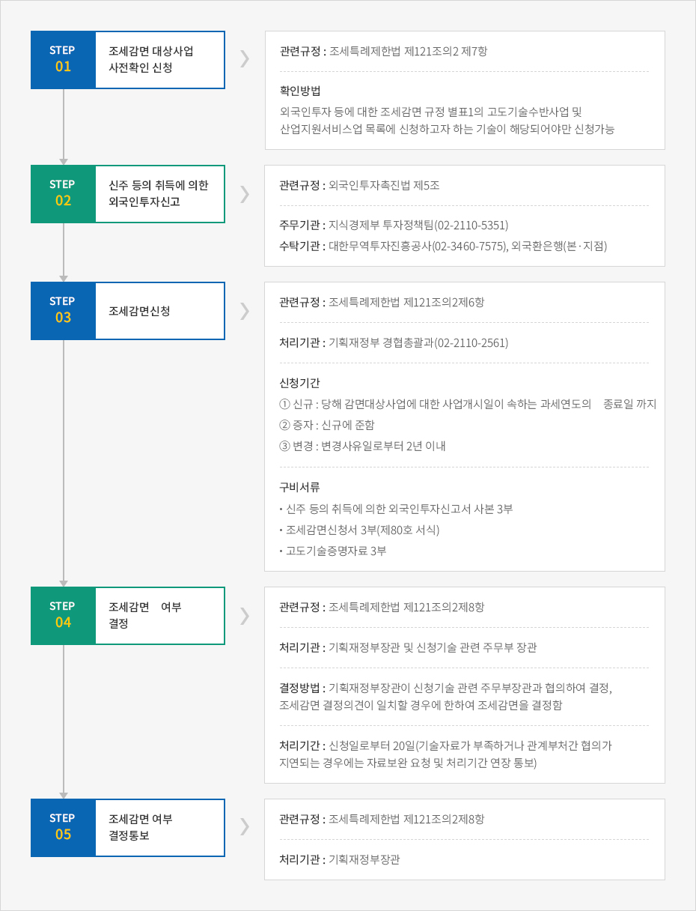

조세지원
- Home
- 투자가이드
- 투자 인센티브
- 조세지원
외국인투자기업 조세지원
외국인투자에 대하여는 조세특례제한법이 정하는 바에 따라 사업소득, 배당소득, 기술도입대가, 근로소득 등에 대해서 소득세를 감면하고, 취득·보유하고 있는 재산에 대한 취득세·등록세·재산세를 감면하고 있습니다.
지방세(취득세·등록세·재산세) 감면
- 외국인투자기업이 감면대상 사업을 영위하기 위하여 취득·보유하는 재산에 대해서는 취득세·등록세·재산세를 100% 또는 50% 세액감면을 하거나 과세표준에서 공제합니다.
- 사업개시일 이후에 취득한 재산에 대해서는 취득세, 등록세, 재산세 모두 사업개시일부터 3-5년간은 당해 재산에 대한 산출세액에 외국인투자비율을 곱한 금액(감면대상세액)의 100%, 그 다음 2년간은 50%를 감면합니다. 단, 과세대상 재산을 사업개시일 이후에 취득하더라도 조세감면 결정을 받기 전에 취득하는 경우에는 이미 납부한 취득세·등록세를 환급 받을 수 없습니다.
- 반면, 사업개시일 이전에 취득한 재산은 취득세·등록세의 경우에는 조세감면결정을 받은 날 이후에 취득하는 재산에 대한 감면대상세액 100% 전액을 감면하고, 재산세는 해당 재산을 취득한 날부터 3-5년 동안은 감면대상세액의 100%, 그 다음 2년 동안은 공제대상금액의 50%를 감면합니다.
- 그 밖에 조례에 의해 지방세 감면기간을 15년의 범위 안에서 연장하거나, 감면 또는 공제비율을 높일 수 있습니다.
관세 등 면제
- 법인세 또는 소득세가 감면되는 사업에 직접 사용되는 다음의 자본재로서 새로이 발행하는 주식 등의 취득에 의한 외국인투자 신고에 따라 도입되는 경우 조세특례제한법에 의해 관세 등을 면제합니다.
- 외국인투자기업이 외국투자가로부터 출자 받은 대외지급수단 또는 내국지급수단으로 도입하는 자본재
- 외국투자가가 출자목적물로 도입하는 자본재
- 관세 등 면제는 외국인투자신고를 한 날로부터 3년 이내에 관세법에 의한 수입신고가 완료되는 자본재에 한해 적용되며, 다만 공장설립승인의 지연 등 기타 부득이한 사유로 인하여 동 기간 내에 수입신고를 완료할 수 없는 경우에는 추가로 3년 이내의 범위에서 기획재정부장관의 승인을 얻어 면제 적용을 받을 수 있습니다.
- 이때, 국내산업의 국제경쟁력 강화에 긴요한 산업지원서비스업 및 고도의 기술을 수반하는 사업이나 외국인투자촉진법에 의해 개별형 외국인투자지역에 입주하는 외국인투자기업이 영위하는 사업에 대해서는 관세, 특별소비세, 부가가치세 모두를 면제합니다. 또한 단지형 외국인투자지역에 입주하는 외국인투자기업, 자유무역지역에 입주하는 특정기업, 경제자유구역에 입주하는 외국인투자기업, 경제자유구역개발사업시행자에 해당하는 외국인투자기업, 제주투자진흥지구 개발사업시행자에 해당하는 외국인투자기업 등이 영위하는 사업에 대해서는 관세를 면제합니다.
신청기관
통관지 세관
제출서류
- 관세면제신청서
- 자본재도입물품명세확인서 사본
- 현물출자 또는 현금으로 도입되는 자본재임을 증명하는 서류
- 법인세 등의 감면대상사업임을 증명하는 서류(조세감면결정서)
- Invoice, B/L 또는 AWB, 가격신고서, Packing List, 원산지증명서 등
※ 현물출자에 관한 특례 : 현물출자 완료확인
외국투자가가 현물로 출자를 하는 경우 상법 규정에 따라 검사인이 현물출자의 이행에 관한 조사 보고서를 작성하여 법원에 제출하여야 합니다.
그러나 외국인투자가가 현물로 출자하는 자본재에 대하여는 이러한 상법규정에도 불구하고 관세청장이 현물출자의 이행과 그 목적물의 종류·
수량·가격 등을 확인한 현물출자완료확인서를 비송사건절차법 규정에 의한 검사인의 조사 보고서로 보게 됩니다.
따라서 외국인투자가가 현물로 출자되는 자본재를 도입한 후 관할법원에 자본등재를 하고자 할 경우 Invest KOREA에 파견된 관세청
파견관으로부터 현물출자완료 확인을 받아야 합니다.
제출서류
- 현물출자 완료확인 신청서 2부, 수입신고필증
배당금에 대한 조세지원
- 조세감면대상사업을 영위하는 외국인투자법인으로부터 외국투자가가 지급받는 배당금에 대하여는 감면기간 내에 발생한 배당소득을 기준으로 감면대상사업의 소득금액비율 만큼을 감면합니다.
- 신규투자 및 현금·현물·배당금에 의한 증자에 따른 배당금에 대한 감면기산일은 법인세의 감면기산일과 동일하며, 법인세가 100% 감면되는 기간에는 배당소득세도 100%, 법인세가 50% 감면되는 기간에는 배당소득세도 50% 감면됩니다. 반면, 이익준비금·재평가적립금·준비금의 자본전입에 따라 증자 받은 자본금에 해당되는 배당금에 대하여는 그 발생근거가 되는 원본 주식의 감면기간 및 감면율을 적용합니다. 즉, 신규로 5년간 100%, 2년간 50% 감면하는 것이 아닙니다.
- 외국투자가가 외국인투자기업의 내국인 또는 내국법인의 지분을 인수한 경우에는 기존주식 취득에 해당되어 조세감면대상이 아니나, 외국인 또는 외국법인의 지분을 다른 외국인 또는 외국법인이 인수하는 경우에는 당초 감면기간 및 감면율이 유지됩니다.
조세감면 신청절차
조세감면의 신청
1) 조세감면 대상사업 사전확인
- 외국투자가·외국인투자기업은 외국인투자촉진법에 의한 외국인투자 신고 전에 조세감면 대상여부를 확인하여 줄 것을 기획재정부장관에게 신청할 수 있으며, 기획재정부장관은 20일 이내에 감면 대상 여부를 결정하여 통보합니다.
- 사전확인신청의 효과는 고도기술여부를 단순히 사전 확인하는 것으로 조세감면 결정효력이 인정될 수는 없으므로 외국인투자 신고 후에 별도의 조세감면신청을 다시 하여야 합니다.
2) 조세감면 신청
- 외국인투자기업의 조세감면 신청은 기획재정부장관에게 하여야 합니다. 다만, 기획재정부장관은 자유무역지역에서의 외국인투자에 대한 조세감면 신청 및 조세감면 변경신청의 접수와 감면·감면내용변경·감면대상 해당 여부의 결정·확인·통지에 관한 권한을 관리권자에게 위탁하고 있습니다.
- 신청기한은 신규법인의 경우 외국인투자기업의 사업개시일이 속하는 과세연도 종료일까지이며, 증자법인의 경우에는 조세특례제한법의 신규투자 조세감면 규정을 준용하여(제121조의2및121조의3) 정합니다. 단, 외국인투자기업이 외국인투자신고 후 최초의 조세감면 통지일로부터 3년이 되는 날 이전에 조세감면결정시 확인된 외국인투자 신고금액의 범위 안에서 증자를 하는 경우에는 감면신청을 하지 않는 경우에도 그 증자분에 대하여 감면결정을 받은 것으로 봅니다(2006.1.1 이후 최초증자분부터 적용). 또한, 조세감면결정을 받은 사업내용을 변경하는 경우 그 변경된 사업에 대한 감면을 받고자 할 때에는 당해 변경사유 발생일로부터 2년이 되는 날까지(이 경우에는 잔여기간에 대하여만 감면적용)하여야 합니다. 만일 조세감면 신청기한이 경과한 후 감면신청을 하여 감면결정을 받은 경우에는 그 감면신청일이 속하는 과세연도와 그 후의 잔존감면기간에 한하여 감면하나, 이미 납부한 세액은 환급하지 않습니다.
조세감면내용 변경신청
조세감면 내용에 대한 변경신청은 조세감면결정을 받은 사업내용(감면대상사업)의 변경부분에 대한 신청을 말합니다. 만일 외국인투자금액 등 외국인투자 신고내용의 변경시에는 별도의 조세감면 변경결정 없이 외국인투자촉진법에 의한 외국인투자내용 변경신고 또는 외국인투자기업등록 변경신청의 내용에 따라 당초 조세감면결정의 효력이 발생하며, 단순한 법인명 변경 및 소재지 변경은 조세감면내용 변경신청 대상이 아니므로 해당 세무서 및 지자체에 신고하면 됩니다.
제출서류
- 당해기술에 대한 설명서 : 그 기술로 생산 또는 공급하는 제품이나 서비스에 대한 Catalog 등 참고자료
- 당해기술로 생산 또는 공급하는 제품이나 서비스의 활용 범위를 기재한 서류
- 생산방식 및 공정표(제조기술에 한함)
- 전 공정에 걸쳐 작성하되, 고도기술을 요하는 공정을 구분하여 표시할 것
- 공정별로 생산행위가 국내에서 이루어지는지의 여부를 표시할 것
- 경제적 효과 또는 기술적 성능을 증빙하는 자료
- 당해기술로 생산 또는 공급한 제품이나 서비스와 동종 또는 유사의 제품이나 서비스와 비교한 성능, 품질 또는 비용절감 등에 관한 사항
- 고도기술임을 증빙하는 다음의 자료
- 당해 기술로 생산 또는 공급하는 제품이나 서비스에 대한 외국정부 기타 공인기관이 발행한 인증서, 시험합격서, 평가서 등
- 당해기술(또는 서비스)에 대한 특허권 등 산업재산권에 관한 자료
- 당해기술(또는 서비스)의 개발과 관련된 자료(연구개발기관, 개발참가자, 개발비용 또는 소요기간 등)
- 당해기술과 동종의 기술(또는 서비스)을 활용하기 위하여 제3국에 투자한 실적과 이를 제3국에 공여한 실적
- 기타 고도기술성을 증빙하는 서류
- Invoice, B/L 또는 AWB, 가격신고서, Packing List, 원산지증명서 등
- 조세감면결정내용 공문 사본
3) 조세감면 결정 및 통보
- 기획재정부장관은 조세감면신청 또는 조세감면내용의 변경신청이 있는 때에 당해 신청이 조세감면 기준에 해당되는지의 여부 등을 검토하여 20일 이내에 감면여부 또는 감면내용의 변경여부를 결정하고 이를 신청인에게 통지하여야 합니다. 단, 감면여부 또는 감면내용의 변경여부를 결정하는데 부득이하게 장기간이 소요된다고 인정되는 때에는 20일의 범위 내에서 그 처리기간을 연장할 수 있으며, 이 경우에는 그 사유 및 처리기간을 신청인에게 통지하여야 합니다.
- 조세감면 또는 조세감면내용의 변경이 결정되면 기획재정부장관은 그 사실을 국세청장·관세청장 및 당해공장시설을 관할하는 지방자치단체의 장에게 통보하여야 합니다.
- 만일 산업지원서비스업 및 고도기술수반사업에 대한 감면신청에 대해 비감면 대상사업으로 결정하려는 때에는 해당 신청일부터 20일 이내에 결정예고통지를 하여야 합니다. 결정예고통지를 받은 자는 기획재정부장관에게 그 통지를 받은 날부터 20일 이내에 통지내용에 대한 적정성 여부에 대한 심사를 소명자료를 첨부하여 서면으로 요청할 수 있고, 이에 대해 기획재정부장관은 요청을 받은 날부터 20일 이내에 감면여부를 결정하고 그 결과를 신청인에게 통지하여야 합니다.
외국인투자기업 조세감면신청 절차


- 조세감면 대상사업 사전확인 신청 - 관련규정 : 조세특례제한법 제121조의2 제7항 - 확인방법 : 외국인투자 등에 대한 조세감면 규정 별표1의 고도기술수반사업 및 산업지원서비스업 목록에 신청하고자 하는 기술이 해당되어야만 신청가능
- 신주 등의 취득에 의한 외국인투자신고 - 관련규정 : 외국인투자촉진법 제5조 - 주무기관 : 지식경제부 투자정책팀(02-2110-5351) - 수닥기관 : 대한무역투자진흥공사(02-3460-7575), 외국환은행(본·지점)
- 조세감면신청
- 관련규정 : 조세특례제한법 제121조의2제6항
- 처리기관 : 기획재정부 경협총괄과(02-2110-2561)
- 신청기간
- ① 신규 : 당해 감면대상사업에 대한 사업개시일이 속하는 과세연도의 종료일 까지
- ② 증자 : 신규에 준함
- ③ 변경 : 변경사유일로부터 2년 이내
- 신주 등의 취득에 의한 외국인투자신고서 사본 3부
- 조세감면신청서 3부(제80호 서식)
- 고도기술증명자료 3부
- 조세감면 여부 결정 - 관련규정 : 조세특례제한법 제121조의2제8항 - 처리기관 : 기획재정부장관 및 신청기술 관련 주무부 장관 - 결정방법 : 기획재정부장관이 신청기술 관련 주무부장관과 협의하여 결정, 조세감면 결정의견이 일치할 경우에 한하여 조세감면을 결정함 - 처리기간 : 신청일로부터 20일(기술자료가 부족하거나 관계부처간 협의가 지연되는 경우에는 자료보완 요청 및 처리기간 연장 통보)
- 조세감면 여부 결정통보 - 관련규정 : 조세특례제한법 제121조의2제8항 - 처리기관 : 기획재정부장관

감면세액의 추징
조세특례제한법에서 규정하는 조세감면제도들은 일정한 기간동안 감면요건을 충족시키는 경우에만 허용되는 것이므로 이러한 감면요건을 충족하지 못하는 경우에는 다음 표와 같이 감면된 세액을 추징하게 됩니다.
감면세액 추징용
| 추징사유 | 대상조세 | 추징범위 |
|---|---|---|
| 등록말소 및 폐업 하는 경우 | 법인세, 소득세, 취득세, 등록세, 재산세, 종합토지세, 관세, 특별소비세, 부가가치세 | 등록말소·폐업일부터 소급하여 5년 (관세는 3년)이내에 감면된 세액 |
| 감면기준에 해당되지 아니한 경우 | 법인세, 소득세, 관세 등 | 감면기준에 해당되지 아니하게 된 날부터 소급하여 5년 이내에 감면된 세액 |
| 신고내용 미이행 또는 시정명령 불이행 | 법인세, 소득세, 관세 등 | 시정명령기간 만료일부터 소급하여 5년 이내에 감면된 세액 |
| 외국투자가가 소유하는 주식·지분을 대한민국 국민(법인)에게 양도하는 경우 |
법인세, 소득세 | 과세연도 초일부터 3년 이내에 양도하는 경우, 감면된 세액×(1-경과월수/36)×주식양도비율 |
| 관세, 특별소비세, 부가가치세 | 면제일부터 3년 이내 양도하는 경우, 감면된 세액×(1-경과월수/36)×주식양도비율 | |
| 취득세, 등록세, 재산세, 종합토지세 | 양도일부터 소급하여 5년 이내에 감면된 세액×주식양도비율 | |
| 출자목적물이 신고 된 목적外로 사용·처분된 경우 |
관세, 특별부가세, 부가가치세 | 수입신고수리일부터 5년(관세는 3년)이내에 신고 목적 외에 사용하거나 처분하는 자본재에 대하여 감면된 세액 |
| 외국투자자의 주식 또는 지분비율이 감면당시 비율에 미달하게 경우 |
취득세, 등록세, 재산세, 종합토지세 | 미달일부터 소급하여 5년 이내 감면된 세액에 미달비율을 곱한 금액 |
다만, 아래의 사유에 대해서는 추징을 면제할 수 있습니다.
- 외국인투자기업이 합병으로 인하여 해산됨으로써 외국인투자기업의 등록이 말소된 경우
- 관세 등을 면제받고 도입되어 사용 중인 자본재를 천재·지변 기타 불가항력적인 사유가 있거나 감가상각, 기술의 진보 기타 경제여건의 변동 등으로 그 본래의 목적에 사용할 수 없게 되어, 기획재정부장관의 승인을 얻어 본래의 목적외의 목적에 사용하거나 처분하는 경우
- 증권거래법에 따라 당해 외국인투자기업을 공개하기 위하여 주식 등을 대한민국국민 또는 대한민국법인에게 양도하는 경우
- 산업지원서비스업 또는 고도의 기술을 수반하는 사업에 투자한 외국투자가가 그 소유주식 등을 대한민국국민 또는 대한민국법인에게 양도한 경우로서 당해기업이 그 산업지원서비스업 및 고도의 기술을 수반하는 사업에서 생산되거나 제공되는 제품 또는 서비스를 국내에서 자체적으로 생산하는 데 지장이 없다고 기획재정부장관이 확인하는 경우
- 외국투자가가 소유하는 주식 등을 다른 법령이나 정부의 시책에 따라 대한민국국민 또는 대한민국법인에게 양도한 경우로서 기획재정부장관이 확인하는 경우
※ 첨부: 외국인 투자기업 조세감면 [다운로드]
기타의 조세지원
기술도입대가에 대한 조세면제
국내 산업의 국제경쟁력 강화에 긴요한 고도의 기술을 계약에 의하여 도입하는 경우, 그 기술을 제공하는 외국인이 받게 되는 기술도입대가에 대한 법인세와 소득세는 최초로 그 대가를 지급하기로 한 날로부터 5년간 면제됩니다. 이는 외국인투자기업에만 적용되는 것은 아니며 순수내국기업에도 같이 적용되는 사항입니다.
이때 조세면제를 받는 기술의 범위는 기획재정부장관이 외국인투자심의위원회의 심의를 거쳐 고시하는 기술(고도 기술제품 및 그 기술)로서 다음 각 호의 기준에 해당하는 기술을 말합니다.
- 국민경제에 대한 경제적 또는 기술적 파급효과가 크고 산업구조의 고도화와 산업경쟁력강화에 긴요한 기술
- 국내에 최초로 도입된 날(기술도입계약 신고일)로부터 3년이 경과되지 아니한 기술이거나, 3년이 경과한 기술로서 이미 도입된 기술보다 경제적 효과 또는 기술적 성능이 뛰어난 기술
- 당해 기술이 소요되는 공정이 주로 국내에서 이루어지는 기술
기술도입대가에 대한 조세면제를 받기 위해서는 기술도입계약이 체결된 날로부터 1년 또는 기술도입대가의 최초 지급일 중 먼저 도래하는 날 이내에 주무부장관에게 면제신청을 하여야 합니다. 만일 신청기한이 경과한 후 면제신청을 하여 면제 확인을 받은 경우에는 그 면제를 신청한 과세연도와 그 후의 잔존면제 기간에 한하여 조세를 면제하며 이미 납부한 세액은 환급하지 않습니다.
외국인투자기업과 기술도입대가에 대한 조세감면 비교
| 구분 | 외국인투자기업에 대한 조세감면 | 기술도입대가에 대한 조세감면 |
|---|---|---|
| 수혜자 | 외국인투자기업, 외국투자가 | 고도기술 제공자 |
| 감면소득 | 외투기업의 법인세·소득세, 투자가에 대한 배당소득세 | 고도기술대가(사용료, 로열티 등) |
| 감면기간 | 5년간 100%, 2년간 50% | 5년간 100% |
| 감면기산일 | 소득발생 과세연도(5년 이내) | 최초로 대가를 지급하기로 한 날 |
| 관련법조문 | 조세특례제한법 121조의2 | 외국인투자촉진법 25조, 26조/조세특례제한법 121조의6 |
| 기술기준 | 국제경쟁력, 고도기술, 3년 미경과 등 | |
| 신청기한 | 기획재정부장관에게 사업개시일이 속하는 과세연도 종료일까지 신청(사전확인신청제도 있음) | 주무부장관에게 기술도입신고 및 계약체결일부터 1년 또는 최초 대가 지급일 중 먼저 도래하는 날까지 조세감면신청 |
| 처리기간 | 신청일부터 20일 이내 | 신청일부터 20일 이내 |
| 신청서식 | 조세감면신청서(별지 80호 서식) | 기술도입대가에 대한 법인세 등의 면제신청서(별지 84호 서식) |
| 감면대상 | 외국인투자 등에 대한 조세감면규정 별표 1 | |
외국인기술자에 대한 조세지원
- 특정 외국인기술자가 국내에서 내국인에게 근로를 제공하고 지급받는 근로소득으로서 당해 외국인기술자가 국내에서 최초로 근로를 제공한 날로부터 5년이 되는 날이 속하는 달까지 발생한 근로소득에 대하여 소득세가 면제됩니다. 단, 동 사항은 최초로 근로를 제공한 날이 2009.12.31 이전인 경우에 한해 한시적으로 적용됩니다.
- 또한, 외국인투자촉진법에 의한 기술도입계약에 의하여 근로를 제공하는 외국인기술자가 국내에서 내국인에게 근로를 제공하고 지급받는 근로소득도 소득세를 면제받을 수 있습니다. 다만 그 대상이 기술도입계약에 관한 신고필증 교부일로부터 5년이 되는 날이 속하는 달까지 발생하는 소득에 한정되며, 신고필증 교부일이 2009.12.31 이전인 경우에 한해 한시적으로 적용되고 있습니다.
| 구분 | 조세특례제한법 제18조 제1항 | 조세특례제한법 제18조 제2항 |
|---|---|---|
| 감면 대상자 |
내국인에게 근로를 제공하는 외국인기술자
|
외국인투자촉진법에서 규정하는 조세감면대상이 되는 기술도입계약에 의하여 국내에서 내국인에게 근로를 제공하는 외국인기술자 |
| 감면소득 |
※ 근로소득 이 외에는 감면 제외
|
|
| 감면기간 | 최초로 근로를 제공한날(2009.12.31 이전인 경우에 한함)부터 5년이 되는 날이 속하는 달까지 발생한 근로소득 | 기술도입계약 신고필증 교부일(2009.12.31 이전인 경우에 한함)부터 5년이 되는 날이 속하는 달까지 발생된 소득 |
| 감면신청 | 근로를 제공한 날의 다음달 10일까지 원천징수 관할세무세장에게 신청 | |
| 비고 |
|
|
외국인근로자에 대한 과세특례
- 외국인인 임원 또는 사용인은 외국인근로자에 대한 과세특례를 누릴 수 있으며, 적용범위는 외국법인의 국내지점 근무자를 포함합니다. 단, 일용 근로자에게는 적용되지 않습니다. 외국인근로자는 아래 둘 중에서 유리한 것을 택하여 과세특례를 받을 수 있습니다.
- 국내에서 근무하고 2009.12.31까지 지급 받는 총급여액의 100분의 30에 상당하는 금액에 대해 소득세 비과세 (나머지 공제항목 계속 적용)
- 국내에서 근무하고 2009.12.31까지 지급받는 근로소득에 대한 소득세에 대해 근로소득의 100분의 17을 단일세율로 지정하여 적용(소득세 관련 비과세·공제·감면 및 세액공제 등 규정 미적용)
- 과세특례를 받는 외국인근로자는 매월 급여분에 대한 근로소득세 원천징수 시 총급여액 중 30％를 차감한 나머지 금액에 대해 근로소득세 간이세액표를 적용하여 원천징수 납부하며, 연말정산 또는 종합소득세 과세표준 확정신고시 위 두 가지 방법 중 납세자에게 유리한 것을 선택할 수 있습니다. 첫 번째 방법인 급여의 30％를 비과세하는 방법의 경우, 연간 총급여액의 30％를 차감한 후 일반적인 근로소득에 대한 공제, 즉 기타 비과세, 근로소득공제 및 인적공제 등을 한 후 기본세율을 적용하여 산출세액을 계산하게 됩니다.